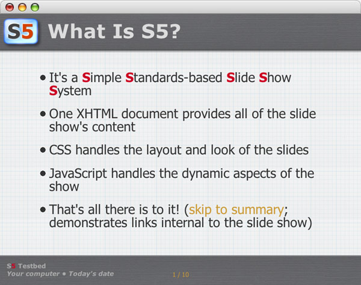
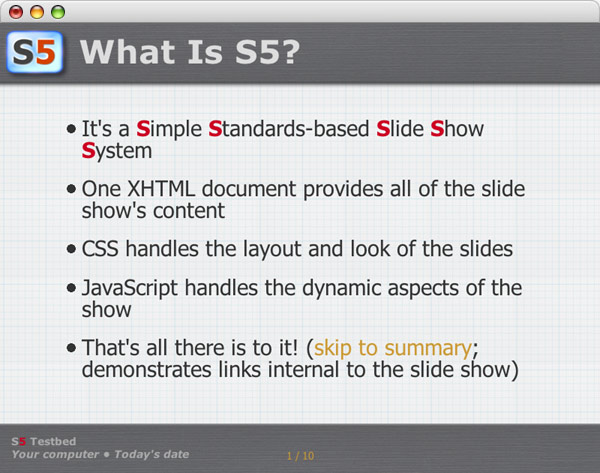

What is New in S5 1.3?
- Supports Image scaling based on window size
- Supports Transitions
- Slide Transitions based on fade in/out
- Incremental Image Transitions (fade in)
- Configurable Transition Duration
- Supports Configurable Autoplay
- Supports Configurable Sounds
- Extended and modified Navigation Panel (invoke the navigation panel at the lower center of the slide)
- Advanced New Themes (checkout)
- I have notes here!
- Keen.
- Remember to tell people that notes are a new feature in 1.2
New since S5 1.3beta3
- Supports Incremental Object Animation in Auto Play Mode
- More exact timing in Auto Play Mode
- Changed Behaviour for Opera
- Changes automatically to Outline Mode (Browser Window)
- Changes automatically to Slideshow Mode (Fullscreen Browser)
- Few Bug fixings
- S5 and OperaShow diverged greatly in S5 1.1
- S5 1.2 should (we hope) bring them into harmony once more
- S5 1.3 supports scalable images, transitions and autoplay
New since S5 1.3beta4
- Supports Audio mp3 (Requirement:
Flash 8Browser Plugin and javascript->flash communication) - Audio through SoundManager 2 (Javascript Sound for the Web)
- SoundManager Beta V2.0b.20070118 at www.schillmania.com
- SoundManager 2 is not Public Domain (BSD License)
- Most Soundloops by Enrique Plazaola
- Soundloops downloaded at Flash Kit
- S5 1.3 supports also audio (mp3 files)
New since S5 1.3beta5
- Audio Support enhanced
- Extended scaling Support
- Embedded Objects like SVG/Flash
- Handling is the same as for images
- Check out the new Test Drive
- IE behaves like S5 1.2 (+ Auto Play)
- S5 1.3 supports also scalable objects
New since S5 1.3beta6
- Audio Support for Opera disabled
- Audio script will be loaded via javascript
- Block style sheet will be loaded via javascript
- Extended control panel design
- Unicode characters as usual (scaled dimension)
- Symbols made with images (fixed dimension)
- IE behaves like S5 1.2 (+ Auto Play)
Image/Object Handling
- Use the following <img>/<object> Insertions, to make your Images/Objects scalable:
class="scale"
or
class="scale incremental" - "scale" should always be the first class and <img>/<object> must include width and height attributes
Transition Settings
- Use the following <head> Insertions, to activate Slide Transitions:
<meta name="tranSitions" content="true" /><meta name="fadeDuration" content="500" /><meta name="incrDuration" content="250" /> - Duration value equals Milliseconds
- toggle Fading
accesskey="f"
Autoplay Settings
- Use the following <head> Insertions, to activate Autoplay:
<meta name="autoMatic" content="true" /><meta name="playLoop" content="false" /><meta name="playDelay" content="10" /> - Delay value equals Seconds
- toggle Autoplay
accesskey="a"
Audio Settings
- Use the following <head> Insertions, to activate Audio Support:
<meta name="audioSupport" content="true" /><meta name="audioVolume" content="100" /><meta name="audioError" content="true" /> - Volume value equals Percent
- toggle Sounds
accesskey="s"
Audio Object
- Audio through the whole Slide Show in
<div class="presentation" /> - Audio through specific Slides in
<div class="slide" /> - Audio Informations embedded in
<object> - Audio Type/Url Attributes
type="audio/mp3" data="mp3/music.mp3" - Audio Volume/Loop Attributes
archive="volume:100,loop"
Navigation Panel
Navigation Panel II
Footer Display
- Transition/Audio Status
- [––] Transions & Audio
OFF - [F–] Transions
ON(Fading) - [–S] Audio
ON(Sound) - [FS] Transions & Audio
ON
- [––] Transions & Audio
- Slide Status
- X/N current Slide of Slides total
- Auto Play Status
- [––] Auto Play
OFF - [>|] Auto Play
ON - [>0] Looping
ON - [||] Pausing
ON
- [––] Auto Play
New S5 Themes
 



(one way of presenting multiple graphics)
Current Limitations
- Only one author can be listed in the metadata
- Opera falls back to use OperaShow; thus some extras (like the slide lister) are not available
- Gecko Engine driven Browsers need to reload after Window scaling (reflow bug)
- S5 1.3 is mostly untested on IE 6/7 (need help: because I do not own a Windump PC and will never do)
- S5 1.3 is still under development (weekly update)
Browser Limitations
- Shiira strange timing Bug while fading (ignores
setTimeout()) - Opera javascript->flash communication fails
- Netscape javascript->flash communication fails
- Gecko Engine driven Browsers need to reload after Window scaling (reflow bug)
- Internet Explorer degrades to version 1.2
Next Improvements
- Support for Color Transitions (Incremental Objects)
- Audio Support for Links
rel="audio/mp3" - Adjustments for Internet Explorer 6/7
- Extensions which I can't imagine yet
In Summary
- S5 is a very flexible and lightweight slide show system available for anyone to use
- S5 is Public Domain so anyone can freely modify it to suit their needs
- Download: S5_1.3beta7.zip
- If you want to contact me
use:
alternativ: